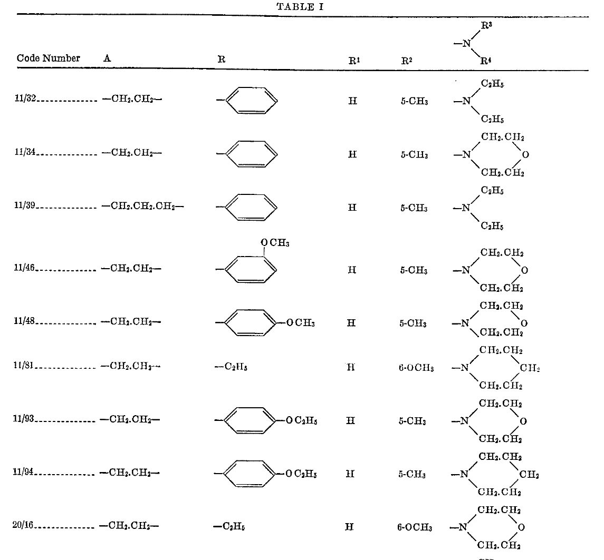
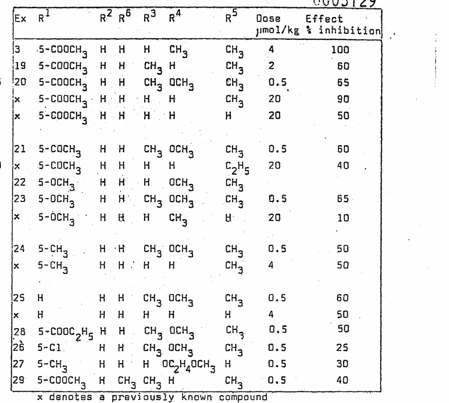

The Hässle codes in patents
Field note 4 followed the H codes of Hässle in Mölndal, the names a compound carried before it got an INN. Losec was H 168/68, metoprolol H 93/26, felodipine H 154/82. It started with a remark from Chris Southan, that MeSH could be useful for old codes. The collection became two lists: a historical list of 138 codes, each with its sources and earliest date, and a small list of 18 codes for substances with an INN. 17 of those went to Wikidata as development code statements. Only 3 said who conferred the code.
Patents were already a large part of that record. 81 of the 138 codes were known only from patents: two Hässle code tables of 1968 and 1969, and the zimelidine patents of 1971. But patents are not my domain. I kept them visible, with dates and structures, and let no conclusion rest on a patent alone. That left Losec as the surprise. Its code could not be tied to Hässle from open records without patents. That was the next thing to dig into.
Then Chris called. Patents are his field. Before the call I wrote him an overview of how the codes had been taken from patents so far. After it, he pointed me to his post ACS Fall 2026 First disclosures: PubChem and patent mappings. He starts from a code and a structure and goes to the patents through PubChem. My case is the opposite: old patents with codes, and few structures anyone has linked to them. So this note is about patents, as a source for codes. They are still not my domain. But with what I learned from Chris, it was interesting to do some archaeology in them: reading old filings page by page, and asking what they can and cannot say about a code.
What was done
- Two code tables transcribed. Two AB Hässle patents by Brändström and S.Å.I. Carlsson print the codes without the "H", in a column headed "Code Number": US 3485835 (52 benzofurans, filed 1968) and US 3558616 (24 benzothiophenes, filed 1969). The OCR text is unusable for these tables, so every row was copied from the page images and checked against them again.
- Structures built for 75 of the 76 codes, from the generic formula plus the substituents of each row. One row (H 43/49) is printed without the branch it needs.
- PubChem, following Chris's method: exact structure, salt records with the same parent, PubChem's patent mappings, and a name search per submitter record for all codes.
- Patent families from the EPO. With EPO Open Patent Services the families of the known patents, and the page images of chosen members, read by eye.
- The omeprazole filings: the 1979 European filing and the 1975 German one it cites.

Everything is in the repository: the inputs, with a findings file per session, and the PubChem notebook.
What I learned
1. For most of these compounds the patent is the only public link between code and structure. Of the 75 structures built, 6 are in PubChem. None of the 6 carries its code. The name search found 47 codes with a submitter record carrying the code as a name, the earliest deposited in 2005. None of them is one of the 76 table codes. For those, nobody has linked the code to a structure.
2. Code and structure printed together is the exception. I checked four families page by page:
- The 1965 family (Swedish priority SE 7128/65): eight members published 1966–69, in Belgium, the Netherlands, France, Spain, Austria, Britain and Norway. They print the same compound tables, with no code column. The codes appear first in the two US filings of 1969.
- The 1971 zimelidine family (SE 5496/71): the codes are printed in the Swedish, Belgian, French, Dutch, British and US members. The German member, DE 2220333, numbers the compounds instead.
- The omeprazole filing of 1979 and the benzimidazole filing of 1975 print no codes at all.
So there is no Hässle rule. A code table is a lucky find.
3. A code's first appearance dates the patent text, not the compound. The benzothiophenes were published in 1966. Their codes were published in 1969. The latest-possible date of those 24 codes stays 1969-11-10.
4. Codes can enter a family late. Five codes not in my lists appear first in the Belgian filing BE 781105 of 1972, each with a drawn structure: H 102/01, H 102/04, H 102/30, H 94/94 and H 99/68. They are not in the Swedish text. So the large list grew from 138 to 143 codes. One of them, H 102/01, is the first second number below 03.
5. The scan decides. Two benzofuran rows were read as ortho and are meta: H 11/46 is 3-methoxyphenyl, H 26/38 3-chlorophenyl. In these drawings the position is easy to misread. A second print of the benzothiophene table, US 3594478, agrees in all 24 rows, including a conflict for H 53/84 that is in both prints. And Google Patents is not the printed page. For DE 2548340 it gives a publication date, a Swedish priority and an inventor's name that the printed cover does not have.
6. A patent mapping is a link, not ownership. PubChem maps three of the benzofurans to a 2013 patent application from Imperial Innovations, priority 2011. The compounds are from 1968. The mapping says the structure is in that text, nothing about who owned the code.
7. Submitter dates show who first named a structure. This is Chris's point, and it held here too. A compound record gets its date from the first structure deposited, often from patent extraction. The name comes later, from another depositor. Only the submitter records show who put the code on the structure, and when. Spelling matters for the search: H 149/94 is found only as "H-149/94", H 29/50 only as "H 29-50".
8. The answer on Losec. The 1979 European filing, EP 0005129, has omeprazole as Example 23 and in claim 7, with Aktiebolaget Hässle as applicant. It does not print H 168/68. The examples go by number. The German filing it cites, DE 2548340 of 1975, is the same. The Swedish application of 1978 has no page images in the EPO service. So the patents tie the compound to Hässle, but never the code.

The decision on H 168/68
The company for H 168/68 now rests on two records, not one. The code names the compound in sources that anyone can check, the earliest a PubMed record from 1983. The compound is claimed by AB Hässle in the 1979 filing. I have decided that this is enough. On 27 November Hässle AB was added as the company on the H 168/68 statement, with the patent as a second reference next to the PubMed record. It is a step from the bar in note 4, where the company was left out unless one record showed it. For Losec I think two records that each can be checked are better than a gap.
The numbers
The historical list now has 143 codes, each with its sources and
its earliest date. 86 of them are known only from patents. The
Wikidata list still has 18 codes. 4 of them now say who
conferred the code. The decision for H 168/68 is D16 on the publication decisions page,
and the edit is recorded in wikidata/batches/.
The findings behind this note are in
hassle_findings_2026-11-26.csv and
hassle_findings_2026-11-27.csv, with a source for
every value.
Closing for now
This was interesting archaeology, and I close the patent work here. Two questions stay with the record: what the Swedish applications say, and how the numbers were given. The patents show that a code is given per isolated substance and that close analogues sit on neighbouring numbers. They do not show what the number encodes. Chris has the note, and if he has input I will add it.
The next step is back on Wikidata: the other development codes of the same compounds, not only the H codes.
If you worked at Hässle, or know how the codes were given, I would still very much like to hear from you.
This work was done together with Claude (Anthropic): transcription from page images, the notebooks, and checking each finding against its source.
Written 2026-11-27.